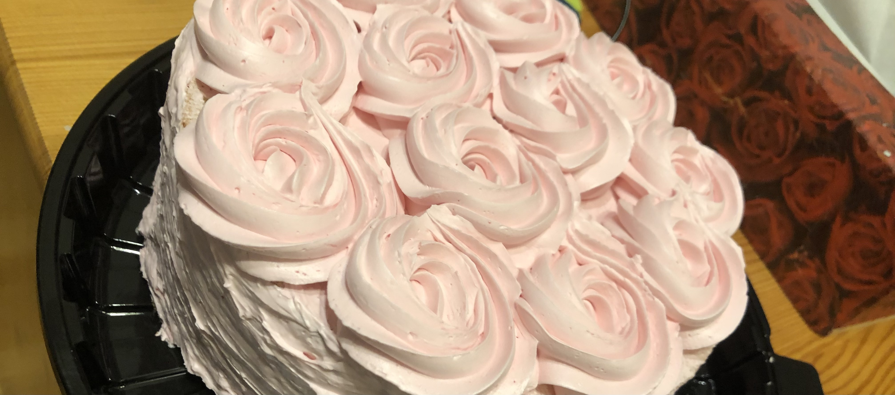

Bevezetés
Ez a bevezetés arra szolgál, hogy minél érdekesebbnek tűnjön ez a feladat. Nagyon jól éreztem magam a feladat irogatása közben, szórakoztató a dolog. Rólam csak annyit, hogy cicafüles headsetet szeretnék, a Razor-től.
Szeretem a gyerekpezsgőt, leginkább a barackosat.
Hobbik preferencia sorrendben
- kreatívkodás
- evés
- videó játék
- CO2 gyártás
- házak első látásra való alapterületének 2 m2 pontossággal való megbecslése
Különleges képességek
Ha 3-at húzok egymás után UNO-ban, akkor a jobbágyoknak automatikusan rendkívüli hadiadót kell fizetniük, ez befolyásolja a tőzsdén való szereplésüket, felborul az egyensúly.
Veszélyes képesség, ezért nem játszom Hunyadi Mátyás halála óta UNO-t.
Ezen kívül tudok nagyon finom csokis kekszet és brownie-t is sütni. 